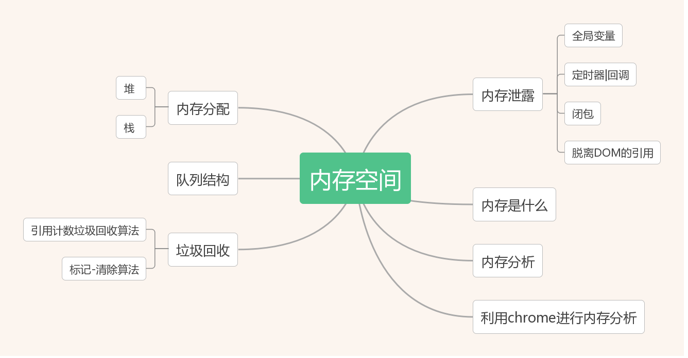

<!DOCTYPE html>
<html>
<head><meta name="generator" content="Hexo 3.8.0">
  <meta charset="utf-8">
  
  <title>深入理解JavaScript系列01-内存空间 | LIUXUEWEN&#39;S BLOG</title>
  <meta name="viewport" content="width=device-width, initial-scale=1, maximum-scale=1">
  
    <meta name="keywords" content="LIUXUEWEN,LIUXUEWEN's Blog">
  
  <meta name="description" content="一、前言  一直以来对 JS 这门动态弱类型语言的理解和认识总是零散杂乱。近期希望整理出一条主轴线来，把 JS 的各方面串联起来。   进入正题，可能以前我们并不关心内存空间，从而导致对内存泄露、深浅拷贝等知识点的理解有点模糊。所以 JS 主轴线就是从内存分配开始。 二、数据结构与算法  所有的语言归根还是为了数据，在内存空间中，编程语言们都有着相似的生命周期：  1）内存分配  2）内存使用：读">
<meta name="keywords" content="前端-JS">
<meta property="og:type" content="article">
<meta property="og:title" content="深入理解JavaScript系列01-内存空间">
<meta property="og:url" content="http://liuxuewen-site.github.io/2019/01/25/JS-deep-01/index.html">
<meta property="og:site_name" content="LIUXUEWEN&#39;S BLOG">
<meta property="og:description" content="一、前言  一直以来对 JS 这门动态弱类型语言的理解和认识总是零散杂乱。近期希望整理出一条主轴线来，把 JS 的各方面串联起来。   进入正题，可能以前我们并不关心内存空间，从而导致对内存泄露、深浅拷贝等知识点的理解有点模糊。所以 JS 主轴线就是从内存分配开始。 二、数据结构与算法  所有的语言归根还是为了数据，在内存空间中，编程语言们都有着相似的生命周期：  1）内存分配  2）内存使用：读">
<meta property="og:locale" content="default">
<meta property="og:image" content="http://liuxuewen-site.github.io/2019/01/25/JS-deep-01/1.png">
<meta property="og:image" content="http://liuxuewen-site.github.io/2019/01/25/JS-deep-01/2.gif">
<meta property="og:image" content="http://liuxuewen-site.github.io/2019/01/25/JS-deep-01/3.jpg">
<meta property="og:image" content="http://liuxuewen-site.github.io/2019/01/25/JS-deep-01/4.jpg">
<meta property="og:image" content="http://liuxuewen-site.github.io/2019/01/25/JS-deep-01/5.jpg">
<meta property="og:image" content="http://liuxuewen-site.github.io/2019/01/25/JS-deep-01/6.jpg">
<meta property="og:updated_time" content="2019-01-25T11:40:42.866Z">
<meta name="twitter:card" content="summary">
<meta name="twitter:title" content="深入理解JavaScript系列01-内存空间">
<meta name="twitter:description" content="一、前言  一直以来对 JS 这门动态弱类型语言的理解和认识总是零散杂乱。近期希望整理出一条主轴线来，把 JS 的各方面串联起来。   进入正题，可能以前我们并不关心内存空间，从而导致对内存泄露、深浅拷贝等知识点的理解有点模糊。所以 JS 主轴线就是从内存分配开始。 二、数据结构与算法  所有的语言归根还是为了数据，在内存空间中，编程语言们都有着相似的生命周期：  1）内存分配  2）内存使用：读">
<meta name="twitter:image" content="http://liuxuewen-site.github.io/2019/01/25/JS-deep-01/1.png">
  
  
    <link rel="icon" href="/favicon.ico">
  
  <link href="//cdn.bootcss.com/font-awesome/4.7.0/css/font-awesome.min.css" rel="stylesheet" type="text/css">
  <link rel="stylesheet" href="/css/style.css">
  <script src="/js/pace.min.js"></script>
  

  
  

</head>
</html>
<body>
  <div id="container">
      <header id="header">
    <div id="banner"></div>
    <div id="header-outer">
        <div id="header-menu" class="header-menu-pos animated">
            <div class="header-menu-container">
                <a href="/" class="left">
                    <span class="site-title">I AM LIUXUEWEN</span>
                </a>
                <nav id="header-menu-nav" class="right">
                    
                    <a href="/">
                        <i class="fa fa-home"></i>
                        <span>Home</span>
                    </a>
                    
                    <a href="/archives">
                        <i class="fa fa-archive"></i>
                        <span>Archives</span>
                    </a>
                    
                    <a href="/about">
                        <i class="fa fa-user"></i>
                        <span>About</span>
                    </a>
                    
                </nav>
                <a class="mobile-header-menu-button">
                    <i class="fa fa-bars"></i>
                </a>
            </div>
        </div>
        <div id="header-row">
            <div id="logo">
                <a href="/">
                    
                </a>
            </div>
            <div class="header-info">
                <div id="header-title">
                    
                    <h2>
                        I AM LIUXUEWEN
                    </h2>
                    
                </div>
                <div id="header-description">
                    
                    <h3>
                        一个 宅不住 的 IT程序员
                    </h3>
                    
                </div>
            </div>
            <nav class="header-nav">
                <div class="social">
                    
                        <a title="Github" target="_blank" href="//github.com/liuxuewen-site">
                            <i class="fa fa-github fa-2x"></i></a>
                    
                        <a title="Weibo" "="">
                            <i class="fa fa-weibo fa-2x"></i></a>
                    
                        <a title="Weixin" "="">
                            <i class="fa fa-weixin fa-2x"></i></a>
                    
                </div>
            </nav>
        </div>
    </div>
</header>
      <div class="outer">
        <section id="main" class="body-wrap"><article id="post-JS-deep-01" class="article article-type-post" itemscope="" itemprop="blogPost">
  <div class="article-inner">
    
      <header class="article-header">
        
  
    <h1 class="post-title" itemprop="name">
      深入理解JavaScript系列01-内存空间
    </h1>
    <div class="post-title-bar">
      <ul>
          
              <li>
                  <i class="fa fa-book"></i>
                  
                      <a href="/categories/前端/">前端</a>
                  
              </li>
          
        <li>
          <i class="fa fa-calendar"></i>  2019-01-25
        </li>
        <li>
          <i class="fa fa-eye"></i>
          <span id="busuanzi_value_page_pv"></span>
        </li>
      </ul>
    </div>
  

          
      </header>
    
    <div class="article-entry post-content" itemprop="articleBody">
      
            
            <h3 id="一、前言"><a href="#一、前言" class="headerlink" title="一、前言"></a>一、前言</h3><p>  一直以来对 JS 这门动态弱类型语言的理解和认识总是零散杂乱。近期希望整理出一条主轴线来，把 JS 的各方面串联起来。</p>
<p>  进入正题，可能以前我们并不关心内存空间，从而导致对内存泄露、深浅拷贝等知识点的理解有点模糊。所以 JS 主轴线就是从内存分配开始。</p>
<h3 id="二、数据结构与算法"><a href="#二、数据结构与算法" class="headerlink" title="二、数据结构与算法"></a>二、数据结构与算法</h3><p>  所有的语言归根还是为了数据，在内存空间中，编程语言们都有着相似的生命周期：<br>  1）内存分配<br>  2）内存使用：读、写<br>  3）内存释放：垃圾回收</p>
<p>  JS 作为一门高级中的 VIP 语言，在创建变量的时候会为其分配内存空间，分配内存的举动是在值的初始化、函数调用等阶段完成。在程序中，使用值的过程其实就是对值的内存空间进行写入和读取。最后，不再使用的内存空间会被自动的进行垃圾回收，但是确定一个分配的内存空间是不是不再使用确实让人头疼，而且自动一词让很多人不再关注于垃圾回收，这恰恰是一个美丽的错误！</p>
<p>  看下面，JS 梳理路线第一波：</p>
<p>  </p>
<p>  所以我们需要了解但是不限于以下知识点：<br>  1）内存是什么?<br>  2）堆(heap)<br>  3）栈(stack)<br>  4）队列(queue)<br>  5）基本类型与引用传递<br>  6）深浅拷贝<br>  7）垃圾回收<br>  8）内存泄露<br>  9）chrome工具进行内存分析</p>
<h3 id="三、内存是什么"><a href="#三、内存是什么" class="headerlink" title="三、内存是什么"></a>三、内存是什么</h3><p>  硬件上计算机存储器由大量的触发器组成，触发器包含了一些晶体管，每个触发器可以存储 1bit(也叫做位)，触发器有唯一标识用来寻址，因此我们得以读取或者覆盖它们。</p>
<p>  触发器的组合形成更大的单位，比如 8bit 为1个字节(byte)，还有 kb…</p>
<p>  我们可以抽象理解计算机的整个内存是一个巨大的数组。</p>
  <font size="4" face="黑体"><strong>静态内存分配和动态内存分配：</strong></font>

<p>  对于原始数据类型:<br>  <figure class="highlight bash"><table><tr><td class="gutter"><pre><span class="line">1</span><br><span class="line">2</span><br><span class="line">3</span><br></pre></td><td class="code"><pre><span class="line">int a;       // 4个字节</span><br><span class="line">int b[4];    // 4 * 4个字节</span><br><span class="line">double c;    // 8 个字节</span><br></pre></td></tr></table></figure></p>
<p>  编译器会检查数据类型并且提前计算出所需的空间大小(4+4*4+8)。然后为这些原始数据变量分配空间，分配的空间我们称为栈空间。假如这些变量定义在一个函数中，当函数被调用的时候，它们的内存就加入到现有的内存中，函数调用终止，它们就会被移除。</p>
<p>  编译器能够准确知道上面每一个原始数据变量的地址，并且在插入与操作系统交互的代码的同时在栈上为它们申请对应字节数的空间，这个过程就是静态内存分配，也有称之为自动分配。</p>
<p>  又如:<br>  <figure class="highlight bash"><table><tr><td class="gutter"><pre><span class="line">1</span><br></pre></td><td class="code"><pre><span class="line">int n = someFuncReturnN(...)</span><br></pre></td></tr></table></figure></p>
<p>  编译器并不能提前计算出变量所需的空间大小，而是在运行的时候才能确定的，这个时候不能在栈上为其分配空间了，所以这个内存是分配在堆空间上的。这个过程就是动态内存分配。</p>
<p>  堆内存涉及指针操作。</p>
  <font size="4" face="黑体"><strong>静态内存分配和动态内存的区别：</strong></font>

<p>  静态内存分配:<br>  1）编译期知道所需内存空间大小<br>  2）编译期执行<br>  3）申请到栈空间<br>  4）LIFO(后进先出)</p>
<p>  动态内存分配:<br>  1）编译期不知道所需内存空间大小<br>  2）运行期执行<br>  3）申请到堆空间<br>  4）没有特定的顺序</p>
<p>  总结一句话：stack 是采用静态内存分配的内存空间，由系统自行释放。heap 是采用动态内存分配的内存空间，无序，大小不定，不会自动释放，哪怕你退出程序，那一块内存还是在那儿。</p>
<h3 id="四、堆-‘heap’"><a href="#四、堆-‘heap’" class="headerlink" title="四、堆(‘heap’)"></a>四、堆(‘heap’)</h3><p>  根据前边说的动态分配和静态分配我们可以知道：</p>
<p>  在 JavaScript 中，引用类型数据(对象、数组、函数)，这么说不太准确，数组和函数也是对象。它们都是申请到堆空间的，然后有一个引用，可以理解为一个指针，它保存了这个对象在堆中的位置。这个引用是存到栈中的。</p>
<h3 id="五、栈-‘stack’"><a href="#五、栈-‘stack’" class="headerlink" title="五、栈(‘stack’)"></a>五、栈(‘stack’)</h3><p>  也叫堆栈。基本数据类型 String，Boolean 之类的变量是申请到栈空间的。</p>
<h3 id="六、队列-‘queue’"><a href="#六、队列-‘queue’" class="headerlink" title="六、队列(‘queue’)"></a>六、队列(‘queue’)</h3><p>  之前看过一个段子：栈和队列的区别? – 吃多了拉就是队列，吃多了吐就是栈。</p>
<p>  这也太有才了，不过说明了栈和队列的特点: 栈先入后出、队列先入先出。</p>
<h3 id="七、基本类型与引用传递"><a href="#七、基本类型与引用传递" class="headerlink" title="七、基本类型与引用传递"></a>七、基本类型与引用传递</h3><p>  搞清楚内存空间，再遇到这种面试题就不会瑟瑟发抖了：<br>  <figure class="highlight bash"><table><tr><td class="gutter"><pre><span class="line">1</span><br><span class="line">2</span><br><span class="line">3</span><br><span class="line">4</span><br><span class="line">5</span><br><span class="line">6</span><br><span class="line">7</span><br><span class="line">8</span><br><span class="line">9</span><br></pre></td><td class="code"><pre><span class="line">var a = 30;</span><br><span class="line">var b = a;</span><br><span class="line">b = 30;</span><br><span class="line">// a 是多少?</span><br><span class="line"></span><br><span class="line">var obj = &#123;a: 20, b:30&#125;</span><br><span class="line">var newObj = obj;</span><br><span class="line">newObj.a = 25;</span><br><span class="line">// obj.a 是多少?</span><br></pre></td></tr></table></figure></p>
<p>  前者 a、b 都在栈空间申请了内存，var b=a 的时候分配了新的值，两者互不相干。</p>
<p>  后者的是引用传递，两者指向堆内存空间的某个位置的同一个对象，所以对对象的操作是互相影响的。</p>
<h3 id="八、深浅拷贝"><a href="#八、深浅拷贝" class="headerlink" title="八、深浅拷贝"></a>八、深浅拷贝</h3><p>  浅拷贝：可以理解为只拷贝了1层，如果有数组之类的对象的话，实际是拷贝了其引用，所以操作该对象是互相影响的。内存上是两个引用指向了堆空间中的同一对象：<br>  <figure class="highlight bash"><table><tr><td class="gutter"><pre><span class="line">1</span><br><span class="line">2</span><br><span class="line">3</span><br><span class="line">4</span><br><span class="line">5</span><br><span class="line">6</span><br><span class="line">7</span><br><span class="line">8</span><br><span class="line">9</span><br></pre></td><td class="code"><pre><span class="line">var o = &#123;</span><br><span class="line">    name: <span class="string">'jack ma'</span>,</span><br><span class="line">    friends: [<span class="string">'李彦宏'</span>, <span class="string">'马化腾'</span>]</span><br><span class="line">&#125;</span><br><span class="line"></span><br><span class="line">var c = Object.assign(&#123;&#125;, o);</span><br><span class="line"></span><br><span class="line">c.friends.push(<span class="string">'雷军'</span>);</span><br><span class="line">o.friends; // [<span class="string">"李彦宏"</span>, <span class="string">"马化腾"</span>, <span class="string">"雷军"</span>]</span><br></pre></td></tr></table></figure></p>
<p>  深拷贝: 就是递归的拷贝，把属性值也拷贝了，互不影响了。内存上是两个引用分别指向了堆空间中的不同对象，但是初始值是一样的：<br>  <figure class="highlight bash"><table><tr><td class="gutter"><pre><span class="line">1</span><br><span class="line">2</span><br><span class="line">3</span><br><span class="line">4</span><br><span class="line">5</span><br><span class="line">6</span><br><span class="line">7</span><br><span class="line">8</span><br><span class="line">9</span><br></pre></td><td class="code"><pre><span class="line">var o = &#123;</span><br><span class="line">    name: <span class="string">'jack ma'</span>,</span><br><span class="line">    friends: [<span class="string">'李彦宏'</span>, <span class="string">'马化腾'</span>]</span><br><span class="line">&#125;</span><br><span class="line"></span><br><span class="line">var c = JSON.parse(JSON.stringify(o))</span><br><span class="line"></span><br><span class="line">c.friends.push(<span class="string">'雷军'</span>);</span><br><span class="line">o.friends; // [<span class="string">"李彦宏"</span>, <span class="string">"马化腾"</span>]</span><br></pre></td></tr></table></figure></p>
<h3 id="九、垃圾回收"><a href="#九、垃圾回收" class="headerlink" title="九、垃圾回收"></a>九、垃圾回收</h3><p>  垃圾回收是 JS 自动完成的，但是不代表我们就不去关注它。实际上确定一个内存不再被使用，然后将其释放是很难的。通常有以下几种算法实现，但是也有很大的局限性。</p>
  <font size="4" face="黑体"><strong>1、引用计数垃圾收集算法：</strong></font>

<p>  这个算法是最简单的，假如一个对象没有指针指向它，那它就被认为是可回收的。</p>
<p>  下面是MDN上面的例子：<br>  <figure class="highlight bash"><table><tr><td class="gutter"><pre><span class="line">1</span><br><span class="line">2</span><br><span class="line">3</span><br><span class="line">4</span><br><span class="line">5</span><br><span class="line">6</span><br><span class="line">7</span><br><span class="line">8</span><br><span class="line">9</span><br><span class="line">10</span><br><span class="line">11</span><br><span class="line">12</span><br><span class="line">13</span><br><span class="line">14</span><br><span class="line">15</span><br><span class="line">16</span><br></pre></td><td class="code"><pre><span class="line">var o = &#123;            // 两个对象被创建，一个作为另一个的属性被引用，另一个被分配给变量 o，很显然，没有一个可以被垃圾收集</span><br><span class="line">    a: &#123;</span><br><span class="line">        b:2</span><br><span class="line">    &#125;</span><br><span class="line">&#125;; </span><br><span class="line"></span><br><span class="line">var o2 = o;          // o2 变量是第二个对 <span class="string">'这个对象'</span> 的引用</span><br><span class="line"></span><br><span class="line">o = 1;               // 现在，<span class="string">'这个对象'</span> 的原始引用 o 被 o2 替换了</span><br><span class="line"></span><br><span class="line">var oa = o2.a;       // 引用 <span class="string">'这个对象'</span> 的 a 属性，现在，<span class="string">'这个对象'</span> 有两个引用了，一个是 o2，一个是 oa</span><br><span class="line"></span><br><span class="line">o2 = <span class="string">"yo"</span>;           // 最初的对象现在已经是零引用了，他可以被垃圾回收了</span><br><span class="line">                     // 然而它的属性 a 的对象还在被 oa 引用，所以还不能回收</span><br><span class="line"> </span><br><span class="line">oa = null;           // a 属性的那个对象现在也是零引用了，它可以被垃圾回收了</span><br></pre></td></tr></table></figure></p>
<p>  这种算法的局限性体现在循环引用：<br>  <figure class="highlight bash"><table><tr><td class="gutter"><pre><span class="line">1</span><br><span class="line">2</span><br><span class="line">3</span><br><span class="line">4</span><br><span class="line">5</span><br><span class="line">6</span><br><span class="line">7</span><br><span class="line">8</span><br></pre></td><td class="code"><pre><span class="line"><span class="keyword">function</span> <span class="function"><span class="title">f</span></span>() &#123;</span><br><span class="line">    var o1 = &#123;&#125;;</span><br><span class="line">    var o2 = &#123;&#125;;</span><br><span class="line">    o1.p = o2;      // o1 references o2</span><br><span class="line">    o2.p = o1;      // o2 references o1. This creates a cycle.</span><br><span class="line">&#125;</span><br><span class="line"></span><br><span class="line">f();</span><br></pre></td></tr></table></figure></p>
<p>  这样垃圾收集器会认为对象至少会被引用一次，而不会回收这块内存。导致内存泄露。</p>
  <font size="4" face="黑体"><strong>2、标记-清除算法：</strong></font>

<p>  这个算法是现在浏览器基本都有的，其核心思想就是不能被引用的对象可被回收。</p>
<p>  原理大致是:<br>  1）有一个 GC root 列表，保存了引用的全局变量，比如 window<br>  2）root 被认为是活动的，不被回收，然后递归检查其子节点，可以被访问的都标记为活动的<br>  3）所有的不被标记的，都是可回收的</p>
<p>  </p>
<p>  这样的话，上面的循环引用，在函数结束后，o1,o2 不再被全局变量所能访问的对象引用，就会被认为是垃圾。</p>
<h3 id="十、内存泄露"><a href="#十、内存泄露" class="headerlink" title="十、内存泄露"></a>十、内存泄露</h3><p>  首先 GC 是无法预测的，其实回收更多的是取决于我们自己怎么去写程序。或多或少年少的我们写的代码都导致了一些内存无法被释放，造成了内存的泄露。</p>
<p>  常见的内存泄露有以下许多（都是 copy 的经典例子）：</p>
  <font size="4" face="黑体"><strong>1、全局变量：</strong></font>

<p>  根据上边的标记-清除算法，root 列表中的全局变量是不会被释放的。所以我们的代码中显式的全局或者隐式的全局变量是不会被垃圾收集器回收的。隐式的全局变量有(还有很多):</p>
<p>  1）忘记写声明了：<br>  <figure class="highlight bash"><table><tr><td class="gutter"><pre><span class="line">1</span><br><span class="line">2</span><br><span class="line">3</span><br><span class="line">4</span><br><span class="line">5</span><br></pre></td><td class="code"><pre><span class="line"><span class="keyword">function</span> <span class="function"><span class="title">foo</span></span>()&#123;</span><br><span class="line">    boss = <span class="string">'jack ma'</span></span><br><span class="line">&#125;</span><br><span class="line">foo();</span><br><span class="line">window.boss; // <span class="string">"jack ma"</span></span><br></pre></td></tr></table></figure></p>
<p>  引擎对 boss 进行 LHS 查询，在当前作用域没有找到声明，就去外层也就是全局之中找，也没找到，这个时候它就会发善心，给你创建一个声明，所以输出 window.boss 是上面的结果。</p>
<p>  避免这种情况的办法就是 use strict。</p>
<p>  2）this 的默认绑定规则：<br>  <figure class="highlight bash"><table><tr><td class="gutter"><pre><span class="line">1</span><br><span class="line">2</span><br><span class="line">3</span><br><span class="line">4</span><br><span class="line">5</span><br></pre></td><td class="code"><pre><span class="line"><span class="keyword">function</span> <span class="function"><span class="title">foo</span></span>()&#123;</span><br><span class="line">    this.boss = <span class="string">'jack ma'</span></span><br><span class="line">&#125;</span><br><span class="line">foo();</span><br><span class="line">window.boss; // <span class="string">"jack ma"</span></span><br></pre></td></tr></table></figure></p>
<p>  独立的函数声明采用的是默认绑定规则，也就说 this 是绑定到全局的。 采用 use strict 可以是默认绑定到 undefined。</p>
  <font size="4" face="黑体"><strong>2、被遗忘的时光 | 回忆：</strong></font>

<p>  定时器我们常常使用:<br>  <figure class="highlight bash"><table><tr><td class="gutter"><pre><span class="line">1</span><br><span class="line">2</span><br><span class="line">3</span><br><span class="line">4</span><br><span class="line">5</span><br><span class="line">6</span><br><span class="line">7</span><br></pre></td><td class="code"><pre><span class="line">var serverData = loadData();</span><br><span class="line">setInterval(<span class="function"><span class="title">function</span></span>() &#123;</span><br><span class="line">    var renderer = document.getElementById(<span class="string">'renderer'</span>);</span><br><span class="line">    <span class="keyword">if</span>(renderer) &#123;</span><br><span class="line">        renderer.innerHTML = JSON.stringify(serverData);</span><br><span class="line">    &#125;</span><br><span class="line">&#125;, 5000);</span><br></pre></td></tr></table></figure></p>
<p>  IE6 时代，假如 serverData 有大量的数据，它是没办法被收集的。但是现代浏览器在这个问题已经做了优化，无需担心。</p>
  <font size="4" face="黑体"><strong>3、闭包：</strong></font>

  <figure class="highlight bash"><table><tr><td class="gutter"><pre><span class="line">1</span><br><span class="line">2</span><br><span class="line">3</span><br><span class="line">4</span><br><span class="line">5</span><br><span class="line">6</span><br><span class="line">7</span><br><span class="line">8</span><br><span class="line">9</span><br><span class="line">10</span><br><span class="line">11</span><br><span class="line">12</span><br><span class="line">13</span><br><span class="line">14</span><br><span class="line">15</span><br></pre></td><td class="code"><pre><span class="line">var theThing = null;</span><br><span class="line">var replaceThing = <span class="function"><span class="title">function</span></span> () &#123;</span><br><span class="line">    var originalThing = theThing;</span><br><span class="line">    var unused = <span class="function"><span class="title">function</span></span> () &#123;</span><br><span class="line">        <span class="keyword">if</span> (originalThing)                         // a reference to <span class="string">'originalThing'</span></span><br><span class="line">        console.log(<span class="string">"hi"</span>);</span><br><span class="line">    &#125;;</span><br><span class="line">    theThing = &#123;</span><br><span class="line">        longStr: new Array(1000000).join(<span class="string">'*'</span>),</span><br><span class="line">        someMethod: <span class="function"><span class="title">function</span></span> () &#123;</span><br><span class="line">            console.log(<span class="string">"message"</span>);</span><br><span class="line">        &#125;</span><br><span class="line">    &#125;;</span><br><span class="line">&#125;;</span><br><span class="line">setInterval(replaceThing, 1000);</span><br></pre></td></tr></table></figure>
<p>  一旦具有相同父作用域的多个闭包的作用域被创建，则这个作用域就可以被共享。也就是说为 someMethod 创建的作用域是被 unused 共享的。theThing 作为 root 持有对 someMethod 的引用，unused 引用的 originalThing，也迫使其不会被回收。这个问题是 Meteor 小组发现的，有兴趣可以百度。</p>
  <font size="4" face="黑体"><strong>4、脱离 DOM 的引用：</strong></font>

  <figure class="highlight bash"><table><tr><td class="gutter"><pre><span class="line">1</span><br><span class="line">2</span><br><span class="line">3</span><br><span class="line">4</span><br><span class="line">5</span><br><span class="line">6</span><br><span class="line">7</span><br><span class="line">8</span><br><span class="line">9</span><br><span class="line">10</span><br><span class="line">11</span><br></pre></td><td class="code"><pre><span class="line">var elements = &#123;</span><br><span class="line">    button: document.getElementById(<span class="string">'button'</span>),</span><br><span class="line">    image: document.getElementById(<span class="string">'image'</span>)</span><br><span class="line">&#125;;</span><br><span class="line"><span class="keyword">function</span> <span class="function"><span class="title">doStuff</span></span>() &#123;</span><br><span class="line">    elements.image.src = <span class="string">'http://example.com/image_name.png'</span>;</span><br><span class="line">&#125;</span><br><span class="line"><span class="keyword">function</span> <span class="function"><span class="title">removeImage</span></span>() &#123;</span><br><span class="line">    // 删除了 DOM 树中对 image 的引用，但是 GC 并不会回收，因为 elements 还引用了呀！</span><br><span class="line">    document.body.removeChild(document.getElementById(<span class="string">'image'</span>));</span><br><span class="line">&#125;</span><br></pre></td></tr></table></figure>
<h3 id="十一、chrome-工具进行内存分析"><a href="#十一、chrome-工具进行内存分析" class="headerlink" title="十一、chrome 工具进行内存分析"></a>十一、chrome 工具进行内存分析</h3><p>  利用浏览器进行内存分析，具体步骤请看下面参考的最后两个。</p>
<p>  我们以上边的闭包为例：</p>
<p>      <br></p>
<p>      <br></p>
<p>      <br></p>
<p>      <br></p>
<p>  还有各种 size 之类的就不说了。反正 chrome 很强大！</p>
<p>  参考：<br>  <a href="https://developer.mozilla.org/zh-CN/docs/Web/JavaScript" target="_blank" rel="noopener">MDN</a><br>  <a href="https://blog.sessionstack.com/how-javascript-works-memory-management-how-to-handle-4-common-memory-leaks-3f28b94cfbec" target="_blank" rel="noopener">How JavaScript works: memory management + how to handle 4 common memory leaks</a><br>  <a href="https://en.wikipedia.org/wiki/Tracing_garbage_collection" target="_blank" rel="noopener">Tracing garbage collection</a><br>  <a href="http://www.ruanyifeng.com/blog/2017/04/memory-leak.html" target="_blank" rel="noopener">ruanyf blog</a><br>  <a href="https://www.smashingmagazine.com/2012/06/javascript-profiling-chrome-developer-tools/" target="_blank" rel="noopener">chrome工具进行内存分析</a></p>
<p>标注：</p>
<ul>
<li>参考资料1：<a href="https://github.com/cbbfcd/all-of-javascript/blob/master/深入理解JavaScript系列/memory.md" target="_blank" rel="noopener">https://github.com/cbbfcd/all-of-javascript/blob/master/深入理解JavaScript系列/memory.md</a></li>
</ul>

            <div class="post-copyright">
    <div class="content">
        <p>最后更新： 2019年01月25日 19:40</p>
        <p>原始链接： <a class="post-url" href="/2019/01/25/JS-deep-01/" title="深入理解JavaScript系列01-内存空间">http://liuxuewen-site.github.io/2019/01/25/JS-deep-01/</a></p>
        <footer>
            <a href="http://liuxuewen-site.github.io">
                
                liuxuewen
            </a>
        </footer>
    </div>
</div>

      
        
            
<div class="page-reward">
    <a id="rewardBtn" href="javascript:;">赏</a>
</div>

<div id="reward" class="post-modal reward-lay">
    <a class="close" href="javascript:;" id="reward-close">×</a>
    <span class="reward-title">
        <i class="icon icon-quote-left"></i>
        请我吃糖~
        <i class="icon icon-quote-right"></i>
    </span>
    <div class="reward-content">
        
        <div class="reward-code">
            
        </div>
        <div class="reward-select">
            
            <label class="reward-select-item checked" data-id="wechat" data-wechat="/images/wechat_code.jpg">
                
            </label>
            
            
            <label class="reward-select-item" data-id="alipay" data-alipay="/images/alipay_code.jpg">
                
            </label>
            
        </div>
    </div>
</div>


        
    </div>
    <footer class="article-footer">
        
        
<div class="post-share">
    <a href="javascript:;" id="share-sub" class="post-share-fab">
        <i class="fa fa-share-alt"></i>
    </a>
    <div class="post-share-list" id="share-list">
        <ul class="share-icons">
          <li>
            <a class="weibo share-sns" target="_blank" href="http://service.weibo.com/share/share.php?url=http://liuxuewen-site.github.io/2019/01/25/JS-deep-01/&title=《深入理解JavaScript系列01-内存空间》 — LIUXUEWEN'S BLOG&pic=http://liuxuewen-site.github.ioimages/logo.png" data-title="微博">
              <i class="fa fa-weibo"></i>
            </a>
          </li>
          <li>
            <a class="weixin share-sns" id="wxFab" href="javascript:;" data-title="微信">
              <i class="fa fa-weixin"></i>
            </a>
          </li>
          <li>
            <a class="qq share-sns" target="_blank" href="http://connect.qq.com/widget/shareqq/index.html?url=http://liuxuewen-site.github.io/2019/01/25/JS-deep-01/&title=《深入理解JavaScript系列01-内存空间》 — LIUXUEWEN'S BLOG&source=" data-title="QQ">
              <i class="fa fa-qq"></i>
            </a>
          </li>
          <li>
            <a class="facebook share-sns" target="_blank" href="https://www.facebook.com/sharer/sharer.php?u=http://liuxuewen-site.github.io/2019/01/25/JS-deep-01/" data-title="Facebook">
              <i class="fa fa-facebook"></i>
            </a>
          </li>
          <li>
            <a class="twitter share-sns" target="_blank" href="https://twitter.com/intent/tweet?text=《深入理解JavaScript系列01-内存空间》 — LIUXUEWEN'S BLOG&url=http://liuxuewen-site.github.io/2019/01/25/JS-deep-01/&via=http://liuxuewen-site.github.io" data-title="Twitter">
              <i class="fa fa-twitter"></i>
            </a>
          </li>
          <li>
            <a class="google share-sns" target="_blank" href="https://plus.google.com/share?url=http://liuxuewen-site.github.io/2019/01/25/JS-deep-01/" data-title="Google+">
              <i class="fa fa-google-plus"></i>
            </a>
          </li>
        </ul>
     </div>
</div>
<div class="post-modal wx-share" id="wxShare">
    <a class="close" href="javascript:;" id="wxShare-close">×</a>
    <p>扫一扫，分享到微信</p>
    
</div>

<div class="mask"></div>

        
        <ul class="article-footer-menu">
            
            
  <li class="article-footer-tags">
    <i class="fa fa-tags"></i>
      
    <a href="/tags/前端-JS/" class="color1">前端-JS</a>
      
  </li>

        </ul>
        
    </footer>
  </div>
</article>


    <aside class="post-toc-pos post-toc-top" id="post-toc">
        <nav class="post-toc-wrap">
            <ol class="post-toc"><li class="post-toc-item post-toc-level-3"><a class="post-toc-link" href="#一、前言"><span class="post-toc-text">一、前言</span></a></li><li class="post-toc-item post-toc-level-3"><a class="post-toc-link" href="#二、数据结构与算法"><span class="post-toc-text">二、数据结构与算法</span></a></li><li class="post-toc-item post-toc-level-3"><a class="post-toc-link" href="#三、内存是什么"><span class="post-toc-text">三、内存是什么</span></a></li><li class="post-toc-item post-toc-level-3"><a class="post-toc-link" href="#四、堆-‘heap’"><span class="post-toc-text">四、堆(‘heap’)</span></a></li><li class="post-toc-item post-toc-level-3"><a class="post-toc-link" href="#五、栈-‘stack’"><span class="post-toc-text">五、栈(‘stack’)</span></a></li><li class="post-toc-item post-toc-level-3"><a class="post-toc-link" href="#六、队列-‘queue’"><span class="post-toc-text">六、队列(‘queue’)</span></a></li><li class="post-toc-item post-toc-level-3"><a class="post-toc-link" href="#七、基本类型与引用传递"><span class="post-toc-text">七、基本类型与引用传递</span></a></li><li class="post-toc-item post-toc-level-3"><a class="post-toc-link" href="#八、深浅拷贝"><span class="post-toc-text">八、深浅拷贝</span></a></li><li class="post-toc-item post-toc-level-3"><a class="post-toc-link" href="#九、垃圾回收"><span class="post-toc-text">九、垃圾回收</span></a></li><li class="post-toc-item post-toc-level-3"><a class="post-toc-link" href="#十、内存泄露"><span class="post-toc-text">十、内存泄露</span></a></li><li class="post-toc-item post-toc-level-3"><a class="post-toc-link" href="#十一、chrome-工具进行内存分析"><span class="post-toc-text">十一、chrome 工具进行内存分析</span></a></li></ol>
        </nav>
    </aside>
    

<nav id="article-nav">
  
    <a href="/2019/01/25/JS-deep-02/" id="article-nav-newer" class="article-nav-link-wrap">

      <span class="article-nav-title">
        <i class="fa fa-hand-o-left" aria-hidden="true"></i>
        
          深入理解JavaScript系列02-执行上下文
        
      </span>
    </a>
  
  
    <a href="/2019/01/08/Dva-gw-06/" id="article-nav-older" class="article-nav-link-wrap">
      <span class="article-nav-title">Dva官网之06-dva 源码解析</span>
      <i class="fa fa-hand-o-right" aria-hidden="true"></i>
    </a>
  
</nav>


    
</section>
        
      </div>
      <footer id="footer">
  <div class="outer">
    <div id="footer-info" class="inner">
      
<p>
    <span id="busuanzi_container_site_uv" style="display:none">
        总访客数：<span id="busuanzi_value_site_uv"></span>
    </span>
    <span id="busuanzi_container_site_pv" style="display:none">
        总访问量：<span id="busuanzi_value_site_pv"></span>
    </span>
</p>


      <!-- <p>
        Powered by  <a href="http://hexo.io/" target="_blank">Hexo</a>
        Theme <a href="//github.com/wongminho/hexo-theme-miho" target="_blank">MiHo</a>
      &copy; 2019 liuxuewen<br>
      </p> -->
      <p>
        1320325272@qq.com 
        liuxuewen
      </p>
    </div>
  </div>
</footer>
    <script async src="//busuanzi.ibruce.info/busuanzi/2.3/busuanzi.pure.mini.js"></script>
<script src="//cdn.bootcss.com/jquery/3.2.1/jquery.min.js"></script>
<script>
  var mihoConfig = {
      root: "http://liuxuewen-site.github.io",
      animate: true,
      isHome: false,
      share: true,
      reward: 1
  }
</script>
<div class="sidebar">
    <div id="sidebar-search" title="Search">
        <i class="fa fa-search"></i>
    </div>
    <div id="sidebar-category" title="Categories">
        <i class="fa fa-book"></i>
    </div>
    <div id="sidebar-tag" title="Tags">
        <i class="fa fa-tags"></i>
    </div>
    <div id="sidebar-top">
        <span class="sidebar-top-icon"><i class="fa fa-angle-up"></i></span>
    </div>
</div>
<div class="sidebar-menu-box" id="sidebar-menu-box">
    <div class="sidebar-menu-box-container">
        <div id="sidebar-menu-box-categories">
            <a class="category-link" href="/categories/hexo/">hexo</a><a class="category-link" href="/categories/前端/">前端</a><a class="category-link" href="/categories/后台/">后台</a><a class="category-link" href="/categories/数据结构/">数据结构</a><a class="category-link" href="/categories/网络协议/">网络协议</a><a class="category-link" href="/categories/项目/">项目</a>
        </div>
        <div id="sidebar-menu-box-tags">
            <a href="/tags/hexo/" style="font-size: 12.86px;">hexo</a> <a href="/tags/前端-CSS/" style="font-size: 14.29px;">前端-CSS</a> <a href="/tags/前端-ES6/" style="font-size: 11.43px;">前端-ES6</a> <a href="/tags/前端-HTML5/" style="font-size: 10px;">前端-HTML5</a> <a href="/tags/前端-JS/" style="font-size: 18.57px;">前端-JS</a> <a href="/tags/前端-react/" style="font-size: 20px;">前端-react</a> <a href="/tags/前端-安全性/" style="font-size: 10px;">前端-安全性</a> <a href="/tags/前端-性能优化/" style="font-size: 10px;">前端-性能优化</a> <a href="/tags/前端-服务器/" style="font-size: 11.43px;">前端-服务器</a> <a href="/tags/前端-移动端适配/" style="font-size: 11.43px;">前端-移动端适配</a> <a href="/tags/前端-考题/" style="font-size: 17.14px;">前端-考题</a> <a href="/tags/后台/" style="font-size: 10px;">后台</a> <a href="/tags/数据结构/" style="font-size: 10px;">数据结构</a> <a href="/tags/网络协议/" style="font-size: 15.71px;">网络协议</a> <a href="/tags/项目/" style="font-size: 10px;">项目</a>
        </div>
    </div>
    <a href="javascript:;" class="sidebar-menu-box-close">&times;</a>
</div>
<div class="mobile-header-menu-nav" id="mobile-header-menu-nav">
    <div class="mobile-header-menu-container">
        <span class="title">Menus</span>
        <ul class="mobile-header-menu-navbar">
            
            <li>
                <a href="/">
                    <i class="fa fa-home"></i><span>Home</span>
                </a>
            </li>
            
            <li>
                <a href="/archives">
                    <i class="fa fa-archive"></i><span>Archives</span>
                </a>
            </li>
            
            <li>
                <a href="/about">
                    <i class="fa fa-user"></i><span>About</span>
                </a>
            </li>
            
        </ul>
    </div>
    <div class="mobile-header-tag-container">
        <span class="title">Tags</span>
        <div id="mobile-header-container-tags">
            <a href="/tags/hexo/" style="font-size: 12.86px;">hexo</a> <a href="/tags/前端-CSS/" style="font-size: 14.29px;">前端-CSS</a> <a href="/tags/前端-ES6/" style="font-size: 11.43px;">前端-ES6</a> <a href="/tags/前端-HTML5/" style="font-size: 10px;">前端-HTML5</a> <a href="/tags/前端-JS/" style="font-size: 18.57px;">前端-JS</a> <a href="/tags/前端-react/" style="font-size: 20px;">前端-react</a> <a href="/tags/前端-安全性/" style="font-size: 10px;">前端-安全性</a> <a href="/tags/前端-性能优化/" style="font-size: 10px;">前端-性能优化</a> <a href="/tags/前端-服务器/" style="font-size: 11.43px;">前端-服务器</a> <a href="/tags/前端-移动端适配/" style="font-size: 11.43px;">前端-移动端适配</a> <a href="/tags/前端-考题/" style="font-size: 17.14px;">前端-考题</a> <a href="/tags/后台/" style="font-size: 10px;">后台</a> <a href="/tags/数据结构/" style="font-size: 10px;">数据结构</a> <a href="/tags/网络协议/" style="font-size: 15.71px;">网络协议</a> <a href="/tags/项目/" style="font-size: 10px;">项目</a>
        </div>
    </div>
</div>
<div class="search-wrap">
    <span class="search-close">&times;</span>
        <a href="javascript:;" class="header-icon waves-effect waves-circle waves-light" id="back">
            <i class="icon icon-lg icon-chevron-left"></i>
        </a>
        <input class="search-field" placeholder="Search..." id="keywords">
        <a id="search-submit" href="javascript:;">
            <i class="fa fa-search"></i>
        </a>
    <div class="search-container" id="search-container">
        <ul class="search-result" id="search-result">
        </ul>
    </div>
</div>

<div id="search-tpl">
    <li class="search-result-item">
        <a href="{url}" class="search-item-li">
            <span class="search-item-li-title" title="{title}">{title}</span>
        </a>
    </li>
</div>
<script src="/js/search.js"></script>
<script src="/js/main.js"></script>


  <script src="//cdn.bootcss.com/particles.js/2.0.0/particles.min.js"></script>
  <div id="particles"></div>
  <script src="/js/particles.js"></script>


  <link rel="stylesheet" href="//cdn.bootcss.com/animate.css/3.5.0/animate.min.css">
  <script src="//cdn.bootcss.com/scrollReveal.js/3.0.5/scrollreveal.js"></script>
  <script src="/js/animate.js"></script>


  <script src="/js/pop-img.js"></script>
  <script>
     $(".article-entry p img").popImg();
  </script>

  </div>
</body>
</html>